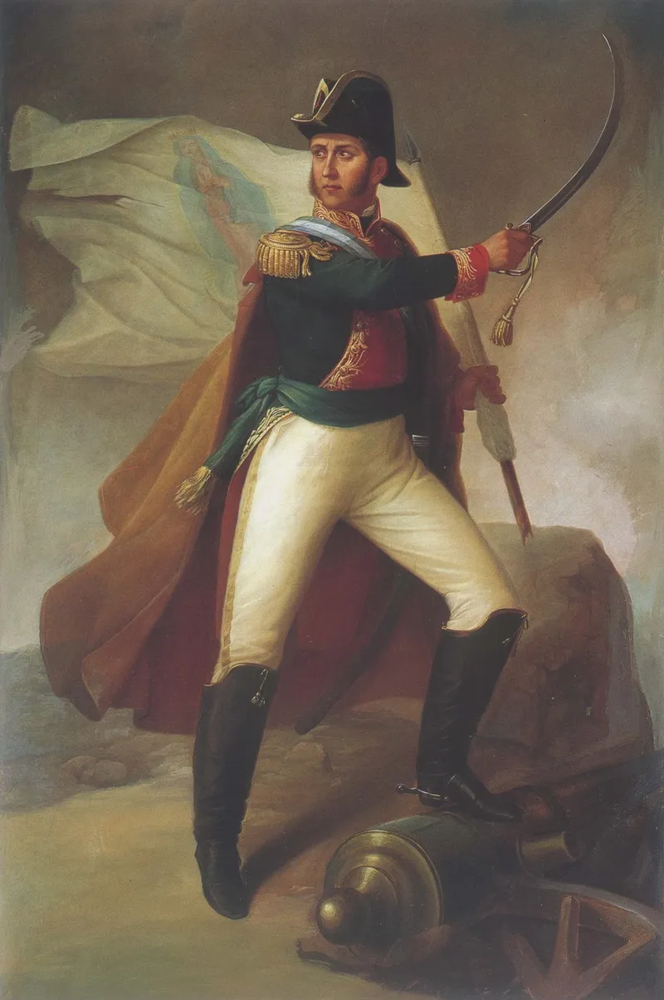

OKpolítico
OKpolítico1811 (Parte 1): El derrumbe del ejército insurgente

Primer tercio del año 1811 en la historia política de México. Analizamos la derrota insurgente en el Puente de Calderón, la traición en Acatita de Baján y la reorganización de la resistencia bajo el mando de Ignacio López Rayón.
Compartir por WhatsApp▶ Ver este video en YouTube y suscríbete
Apertura: El ocaso del primer ejército
A principios de 1811, la Nueva España se encuentra en el punto álgido de su fractura militar e institucional. Tras la retirada de las puertas de la Ciudad de México a finales de 1810 y el repliegue estratégico ordenado tras el revés en Aculco,
las fuerzas insurgentes se reagrupan en el occidente del virreinato bajo el mando nominal de Miguel Hidalgo y la dirección militar de Ignacio Allende. El movimiento que había iniciado con el Grito de Dolores el 16 de septiembre de 1810 por el párroco Miguel Hidalgo,
✉️ Recibe lo importante del día en tu correo. Suscríbete gratis →Allende y otros líderes se enfrenta ahora a su prueba más dura frente al aparato militar colonial. El levantamiento popular que sacudió los cimientos del régimen virreinal en sus primeros meses debe enfrentarse de manera inexorable a la disciplina y a la maquinaria de combate formal del Imperio español,
marcando el inicio de una transformación radical en la naturaleza del conflicto armado en todo el territorio novohispano. Para diversos analistas e historiadores,
la decisión de Hidalgo de no tomar la Ciudad de México tras la victoria táctica en el Monte de las Cruces sella el destino estratégico de la primera fase insurreccional. Las tensiones entre el clérigo y los oficiales de carrera del ejército colonial español —que ya se habían manifestado crudamente en episodios previos como la toma de la Alhóndiga de Granaditas en Guanajuato,
el saqueo subsiguiente y los sucesos en Valladolid— se tornan completamente insostenibles ante la inminente llegada del reorganizado y disciplinado ejército realista de Félix María Calleja, quien avanza con la consigna clara de cortar de tajo la insurrección en el occidente novohispano.
En el bando opuesto, el virrey Francisco Javier Venegas y sus mandos militares se preparan metódicamente para aniquilar el levantamiento popular. El choque entre la indisciplinada muchedumbre insurgente, integrada por miles de milicianos y civiles armados sin instrucción formal,
y la maquinaria militar profesional del Imperio español se vuelve un desenlace inevitable para la estabilidad del virreinato novohispano. Las autoridades virreinales despliegan todos sus recursos estratégicos y tácticos, consolidando un cerco militar que busca desarticular por completo los principales núcleos de poder rebelde en las provincias del interior.
La catástrofe del Puente de Calderón
El 17 de enero de 1811 se libra la decisiva Batalla del Puente de Calderón, ubicada a 30 kilómetros al este de Guadalajara, en la intendencia del mismo nombre y en las inmediaciones del actual municipio de Zapotlanejo, Jalisco.
Las fuerzas realistas al mando del teniente general Félix María Calleja, auxiliadas por mandos como Manuel de Flon y José de la Cruz, se componen de apenas 6,000 soldados profesionales veteranos. En contraparte, enfrentan a una masa insurgente calculada por las fuentes historiográficas entre ochenta mil y cien mil combatientes,
en un desigual encuentro que definirá el rumbo político y militar de la Nueva España. A pesar de la abrumadora superioridad numérica y de contar teóricamente con 95 cañones,
así como artefactos rudimentarios como cohetes con puntas metálicas y granadas de mano lanzadas con hondas fabricadas expresamente para suplir la falta de armamento convencional, los insurgentes carecen por completo de la coordinación táctica necesaria. Al principio del combate,
los rebeldes logran contener e incluso hacer retroceder las líneas virreinales gracias al ímpetu desbordante de su infantería y de su numerosa caballería irregular organizada por Juan Aldama, mientras el propio Hidalgo observa el desarrollo de las acciones desde la posición de reservas.
El punto de quiebre absoluto sobreviene cuando una granada de artillería realista impacta de manera directa en el parque principal de municiones del ejército insurgente. La consiguiente y masiva explosión destruye la propia artillería, reduce drásticamente las escasas municiones disponibles,
desata un incendio devastador que ciega la visibilidad en el campo y siembra el pánico generalizado entre las filas rebeldes, que de inmediato inician una desbandada desorganizada e imposible de contener, abandonando hombres y pertrechos en su desesperada huida.
La batalla concluye tras seis horas de intenso fuego con una victoria categórica para el bando realista. En la acción muere Manuel de Flon, intendente de Puebla, abatido tras finalizar el encuentro por las fuerzas contrarias. Sin embargo,
las consecuencias estratégicas son devastadoras: el ejército insurgente queda fragmentado, desarticulado e imposibilitado de volver a concentrar una fuerza semejante en toda la campaña, marcando el fin de la primera oleada insurreccional y abriendo paso a la persecución sistemática de sus principales dirigentes.
La ruptura del liderazgo y la traición de Baján
Tras el absoluto desastre militar en el Puente de Calderón, los principales líderes insurgentes emprenden una accidentada retirada hacia el norte del virreinato con el propósito estratégico de buscar apoyo diplomático,
armamento y pertrechos en los Estados Unidos. Durante el trayecto, en la hacienda del Pabellón, ubicada en el territorio de Aguascalientes, las profundas tensiones acumuladas estallan abiertamente: Ignacio Allende y un sector de oficiales desplazan formalmente a Miguel Hidalgo del mando supremo del ejército insurgente,
asumiendo el control militar absoluto ante la ineficacia demostrada en el manejo de las tropas regulares. El mando militar recae de manera formal en Ignacio Allende, mientras la columna de dirigentes avanza a través de Zacatecas rumbo a Coahuila y Saltillo.
Sin embargo, paralelamente, el sofisticado aparato de inteligencia virreinal y las redes de contrainsurgencia operan con extrema eficacia en las provincias internas del norte de la Nueva España,
rastreando cada movimiento de los caudillos y preparando la emboscada definitiva que neutralizará de forma permanente la cúpula del movimiento armado. El 21 de marzo de 1811, los principales jefes del movimiento insurgente inicial —Miguel Hidalgo y Costilla, Ignacio Allende, Ignacio Aldama, Juan Aldama,
Mariano Jiménez y Mariano Abasolo— son arteramente traicionados y capturados por el capitán realista Ignacio Elizondo en las Norias de Acatita de Baján, en el estado de Coahuila.
Este golpe certero descabeza por completo a la insurrección en su fase fundacional y deja al movimiento sin sus figuras más emblemáticas. La captura fulminante de los máximos jefes paraliza momentáneamente el mando central de la insurrección en el norte.
Los prisioneros de alto rango son conducidos encadenados y bajo rigurosa vigilancia militar hacia la ciudad de Chihuahua, donde serán sometidos a rigurosos procesos tanto militares como eclesiásticos bajo la severa e implacable justicia del régimen virreinal,
culminando meses más tarde en las ejecuciones que cerrarán este dramático capítulo de la historia patria.
La reorganización en el norte: Ignacio López Rayón
Mientras los líderes históricos marchan encadenados hacia su cautiverio definitivo en el norte, en la ciudad de Saltillo se reorganizan los mandos secundarios y operativos de la insurrección. El 16 de marzo de 1811, Ignacio López Rayón es nombrado formalmente jefe supremo del ejército insurgente,
asumiendo la enorme responsabilidad histórica de mantener viva la lucha armada tras la caída de los primeros caudillos y consolidando un liderazgo político y administrativo indispensable. Rayón toma la determinación táctica de emprender una retirada ordenada hacia el sur para escapar de la extrema vulnerabilidad que representaban las planicies del norte y consolidar bases de operaciones mucho más seguras.
Las fuerzas realistas al mando de mandos virreinales inician la persecución de los contingentes insurgentes en repliegue, buscando copar a las tropas antes de que logren fortificarse en el interior del virreinato. El 1 de abril de 1811 se libra la Batalla de Puerto de los Piñones.
A diferencia de los errores tácticos que propiciaron el desastre de Calderón, las fuerzas al mando de Ignacio López Rayón logran una contundente victoria táctica tras una intensa jornada de seis horas de combate,
demostrando una notablemente superior disciplina operativa y un control efectivo sobre la caballería e infantería rebelde. El 15 de abril de 1811, Ignacio López Rayón y el general José Antonio Torres consuman la toma de Zacatecas,
capturando valiosos recursos de plata, armamento y artillería tras una brillante acción en el Cerro del Grillo. A diferencia de las tomas previas en el Bajío, Rayón intenta instaurar un orden administrativo más formal,
convocando a la creación de un órgano de gobierno representativo que sentará las bases para la posterior creación de la Junta de Zitácuaro.
El contexto global y las Cortes de Cádiz en 1811
Mientras la Nueva España experimenta la dramática caída y transformación de su primer liderazgo insurgente, en la metrópoli peninsular continúan de forma paralela los trascendentales trabajos de las Cortes de Cádiz. Los diputados americanos y peninsulares debaten intensamente el nuevo marco constitucional para el Imperio español,
buscando frenar el profundo descontento en los virreinatos de ultramar sin ceder en los principios fundamentales de la soberanía central, en un esfuerzo legislativo sin precedentes dentro del mundo hispánico.
En el escenario internacional de 1811, las guerras napoleónicas siguen condicionando de manera directa la estabilidad política de Europa y sus dominios coloniales. En América del Sur, por ejemplo, la Junta de Buenos Aires envía expediciones militares al Paraguay bajo el mando de Manuel Belgrano,
las cuales terminan siendo derrotadas por las fuerzas realistas locales en las batallas de Paraguarí y Tacuarí, evidenciando que los procesos emancipatorios en el cono sur enfrentan idénticos retos militares frente al poder realista.
Asimismo, en la región de Venezuela, el proceso independentista avanza incontenible hacia la ruptura total con la monarquía española, culminando meses más tarde con la solemne firma de su Acta de Independencia absoluta el 5 de julio de 1811.
Estos acontecimientos demuestran que el año 1811 constituye un periodo de redefinición radical y simultánea en todo el ámbito hispanoamericano, donde las estructuras del antiguo régimen vacilan ante el embate de los movimientos patrióticos.
Sigue viendo
Con información de
Wikipedia — 1811 · Wikipedia — Anexo:México en 1811 · Wikipedia — Batalla del Puente de Calderón · Wikipedia — Junta de Zitácuaro · Wikipedia — Ignacio López Rayón · Del Arenal Fenochio, Jaime. Cronología de la Independencia (1808-1821)